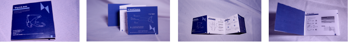
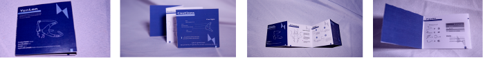

Y U N L O N.
In 2070, brain-computer interface technology was widely used in the medical industry, and in the wake of the Fifth Feminist Revolution, female scientists invented this abortion device that could read women's autonomous consciousness, working to liberate women's reproductive autonomy.
In 2070, brain-computer interface technology was widely used in the medical industry, and in the wake of the Fifth Feminist Revolution, female scientists invented this abortion device that could read women's autonomous consciousness, working to liberate women's reproductive autonomy.


 
